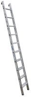

Structure itérative complète
Exemple 1 - Arrivées dans un hôtel
Dans un hôtel, à la récéption, le réceptioniste accueille les clients, enregistre leurs séjours et leurs
donne les clés de leurs chambres.
 Réception d'un hôtel, file d'attente
Réception d'un hôtel, file d'attente
Dans le cas où il y a quatre clients qui viennent tout juste d'arriver. Le réceptioniste exécute les mêmes
tâches pour chacun d'eux.
La procédure de réception se déroule pour un client comme suit :
- Sourir
- Souhaiter la bienvenue
- Demander les pièces d'identités
- Enregistrer les information du client
- Affecter une chambre
- Retourner les pièces d'identité
- Donner la clé de la chambre
- Indiquer le numéro de chambre
- Appeler le porteur de bagages
- Demander au porteur de bagages d'indiquer le chemin au client
- Souhaiter la bienvenue
D'où on peut écrire le pseudo-code (algorithme) suivant :
Pour cpt de 1 à 4 Faire
// Exécuter la procédure de réception
Fin Pour
Exemple 2 - Panneau lumineux
Soit le panneau lumineux suivant, cliquer sur le bouton [On] pour allumer les voyants lumineux:
Ecrire un programme jeu de lumière qui permet d'allumer les voyants à tour de rôle.
On suppose que :
- Les voyants sont numérotés de 0 à 7
- La fonction Allumer(i), allume le voyant n°i
- La fonction Eteindre(i), éteint le voyant n°i
- La fonction Attendre(t), fait une pause de t millisecondes
Travail demandé
Ordonner les instructions suivantes :
-
Nombre d'essais : {{nbre_essais}}
Pour i de 0 à 7 Faire
Allumer(i)
Attendre(200)
Eteindre(i)
Fin Pour
Définition
Une structure itérative complète est utilisée pour répéter une suite d'instructions, un nombre fini
de fois connu à l'avance.
Forme 1
Compter de 0 à n-1 par pas de 1, n > 0.
Pour cpt de 0 à n-1 Faire
// Traitements
Fin Pour
for cpt:=0 to n-1 do begin
// Traitements
end;
for cpt in range(n):
# Traitements
Forme 2
Compter de d à f par pas de 1, f > d.
Pour cpt de d à f Faire
// Traitements
Fin Pour
for cpt:=d to f do begin
// Traitements
end;
for cpt in range(d, f+1):
# Traitements
Forme 3
Décompter de d à f par pas de -1, f < d.
Pour cpt de d à f [pas=-1] Faire
// Traitements
Fin Pour
for cpt:=d downto f do begin
// Traitements
end;
for cpt in range(d, f-1, -1):
# Traitements
Activité 1 - Table de multiplication
Ecrire un programme qui permet d'afficher les 10 premiers multiples d'un nombre n donné.
 Table de multiplication
Table de multiplication
Solution
Algorithme Table_Multiplication
Début
Ecrire("Donner un nombre ? ")
Lire(n)
Pour i de 1 à 10 faire
Ecrire(n, "×", i, "=", n*i)
Fin Pour
Fin
| Objet |
Type/Nature |
| n, i |
entier |
Activité 2 - Consonnes
Ecrire un programme qui affiche uniquement les consonnes majuscules.
Les lettres en rouge sont les voyelles, tandis que les lettres en vert sont les consonnes.
Solution
Algorithme Consonnes
Début
Pour i de 0 à 25 faire
car ← chr(65 + i)
Si car ∉ ["A","E","I","O","U","Y"] Alors
Ecrire(car)
Fin Si
Fin Pour
Fin
| Objet |
Type/Nature |
| i |
entier |
| car |
caractère |
Activité 3 - Promotion des employés
Ecrire un programme qui saisit les noms des n employés d'une société, ainsi
que leurs anciennetés anc, puis affiche ceux et celles qui méritent une promotion.
Il suffit de dépasser six ans d'ancienneté pour mériter une promotion.
Solution
Nouveau régime
Algorithme Promotion
Début
Ecrire("Nombre d'employés ? ")
Lire(n)
Pour i de 0 à n-1 faire
Ecrire("Nom employé n°", i+1, " ?")
Lire(noms[i])
Ecrire("Anciennté ", noms[i], " ? ")
Lire(anc[i])
Fin Pour
Ecrire("Les employés qui méritent une promotion sont :")
Pour i de 0 à n-1 faire
Si anc[i] >= 6 Alors
Ecrire(noms[i], " pour ", anc[i], " ans de services")
Fin Si
Fin Pour
Fin
| TDNT |
tab_ch = tableau de 20 chaîne
tab_en = tableau de 20 entier |
| Objet |
Type/Nature |
| n, i |
entier |
| noms |
tab_ch |
| anc |
tab_en |
Ancien régime
Début Promotion
Ecrire("Nombre d'employés ? ")
Lire(n)
Pour i de 1 à n faire
Ecrire("Nom employé n° ", i, " ?")
Lire(noms[i])
Ecrire("Anciennté ", noms[i], " ? ")
Lire(anc[i])
Fin Pour
Ecrire("Les employés qui méritent une promotion sont :")
Pour i de 1 à n faire
Si anc[i] >= 6 Alors
Ecrire(noms[i], " pour ", anc[i], " ans de services")
Fin Si
Fin Pour
Fin
| TDNT |
tab_ch = tableau de 20 chaîne
tab_en = tableau de 20 entier |
| Objet |
Type/Nature |
| n, i |
entier |
| noms |
tab_ch |
| anc |
tab_en |
Structure itérative à condition d'arrêt
Exemple - Le jeu de l'échelle

Echelle 10 marches
En l'absence de ses parent, un enfant joue le jeu de l'échelle qui consiste à grimper une échelle de 10
marches.
L'enfant grimpe parfois une seule marche d'autres fois deux
marches jusqu'à atteindre la dernière.
Combien de fois devra-t-il grimper pour atteindre le sommet ?
On demande d'écrire un programme pour simuler cette situation.
Attention : Si l'enfant est dans l'avant dernière marche et qu'il
décide de grimper, encore, deux marches, il risque de tomber.
Travail demandé
On donne l'algorithme suivant, et on demande de le terminer :
Algorithme Echelle
Début
pos ← 0 // position actuelle
cpt ← 0 // compteur nbre de fois
............... //(1)
// Sélectionner un nombre aléatoire 1 ou 2
nbm ← .............. //(2)
// Si l'enfant n'a pas atteint
// le sommet de l'échelle
Si ............... Alors //(3)
// Incrémenter :
// - le compteur du nbre de fois
// - la position actuelle
cpt ← ............... //(4)
pos ← ............... //(5)
Ecrire("Youssef a monté", nbm, "marches, il est à la position", pos)
Fin Si
............... //(6)
Ecrire("Youssef a atteint le sommet de l'échelle en", cpt, "fois")
Fin
Solution
Algorithme Echelle
Début
pos ← 0
cpt ← 0
Répéter
nbm ← al√©a(1, 2)
Si pos+nbm ≤ 10 Alors
cpt ← cpt + 1
pos ← pos + nbm
Ecrire("Youssef a monté", nbm, "marches, il est à la position", pos)
Fin Si
Jusqu'à pos = 10
Ecrire("Youssef a atteint le sommet de l'échelle en", cpt, "fois")
Fin
| Objet |
Type/Nature |
| pos, cpt, nbm |
entier |
Exemple - Devine mon nombre
Dans le jeu devine mon nombre l'ordinateur choisit un nombre dans l'intervalle [0, 99] et
l'utilisateur doit le retrouver.
Le nombre d'essais est illimité.
Le jeu se déroule comme suit :
- L'ordinateur choisit un nombre au hasard
secret dans l'intervalle [0, 99].
- L'utilisateur fait un essai pour le deviner
nombre.
- L'ordinateur, vérifie :
- Si nombre < secret, l'ordinateur indique que le nombre à deviner est plus grand
- Si nombre > secret, l'ordinateur indique que le nombre à deviner est plus petit
- Si le nombre = secret, l'utilisateur a trouvé le bon nombre et le jeu s'arrête,
sinon on répète les étapes 2 et 3
- L'ordinateur affiche un message de félicitations
Jeu de devinette
J'ai choisi un nombre entre 0 et 99, et c'est à vous de le deviner.
{{message}}
Travail demandé
On donne l'algorithme suivant, et on demande de le terminer :
Algorithme devinette
Début
// choisir un nombre entre 0 et 99
secret ← ............... // (1)
............... // (2)
// Essai de l'utilisateur
Ecrire("Devine mon nombre [0, 99] ? ")
Lire(nombre)
Si ............... Alors // (3)
Ecrire("Plus grand que", nombre)
Sinon Si ............... Alors // (4)
Ecrire("Plus petit que", nombre)
Fin Si
Jusqu'à ............... //(5)
Ecrire("Félicitations tu as gagné!")
Ecrire(...............) (6)
Fin
Solution
Algorithme devinette
Début
// choisir un nombre entre 0 et 99
secret ← al√©a(0, 99)
Répéter
// Essai de l'utilisateur
Ecrire("Devine mon nombre [0, 99] ? ")
Lire(nombre)
Si nombre < secret Alors
Ecrire("Plus grand que", nombre)
Sinon Si nombre > secret Alors
Ecrire("Plus petit que", nombre)
Fin Si
Jusqu'à nombre = secret
Ecrire("Félicitations tu as gagné!")
Ecrire("Le nombre caché est", secret)
Fin
| Objet |
Type/Nature |
| nombre, secret |
entier |
Définition
Une structure à condition d'arrêt est utilisée pour répéter une suite d'actions jusqu'à
ce qu'une condition soit vraie.
Répéter
// Traitements
Jusqu'à condition
repeat
// Traitements
until condition;
while True:
# Traitements
if condition:
break
Activité 4 - Les 4 saisons
 Roue des saisons
Roue des saisons
Ecrire un programme qui permet √† l'utilisateur de saisir un mois ∈ [1, 12]. Puis affiche la saison
correspondante.
Solution
Algorithme saisons
Début
Répéter
Ecrire("Mois de l'année [1, 12] ? ")
Lire(mois) // qté de pâte
Jusqu'√† 1 ≤ mois ≤ 12
Si 1 ≤ mois ≤ 3 Alors
Ecrire("Hiver")
Sinon Si 4 ≤ mois ≤ 6 Alors
Ecrire("Printemps")
Sinon Si 7 ≤ mois ≤ 9 Alors
Ecrire("Eté")
Sinon
Ecrire("Automne")
Fin Si
Fin
| Objet |
Type/Nature |
| mois |
entier |
Activité 5 - Les Youyou
 YouYou
YouYou
Eya aime les "YouYou". Aujourd'hui, elle décide d'en préparer. Après avoir mélangé les ingrédients, elle
obtient qp grammes de pâte, qp≥200gr.
Sachant qu'une pièce de "YouYou" pèse, py, entre 60g et 90g, on veut calculer le nombre de
"YouYou", ny, que Eya obtiendra à la fin.
Si la quantité de pâte est insuffisante, inférieure à 60gr, on ne peut pas fabriquer un
"YouYou".
On demande écrire un programme pour simuler la situation.
Solution
Nouveau régime
Algorithme Youyou
Début
Répéter
Ecrire("Quantité de pâte en grammes ? ")
Lire(qp) // qté de pâte
Jusqu'à qp > 100
ny ← 0 // nbre youyou
Répéter
py ← al√©a(60, 90) // poids youyou
Si qp < py Alors
py ← qp
Fin si
Si py ≥ 60 Alors
ny ← ny + 1
Ecrire("Youyou", ny, ",", py, "gr")
Sinon
Ecrire("Reste ", py, "gr\n")
Fin Si
qp ← qp - py
Jusqu'à qp = 0
Ecrire("Nombre de Youyou :", ny)
Fin
| Objet |
Type/Nature |
| qp, ny, py |
entier |
Ancien régime
Début Youyou
Répéter
Ecrire("Quantité de pâte en grammes ? ")
Lire(qp) // qté de pâte
Jusqu'à qp > 100
ny ← 0 // nbre youyou
Répéter
py ← al√©a(31) + 60 // poids youyou
Si qp < py Alors
py ← qp
Fin si
Si py ≥ 60 Alors
ny ← ny + 1
Ecrire("Youyou", ny, ",", py, "gr")
Sinon
Ecrire("Reste ", py, "gr\n")
Fin Si
qp ← qp - py
Jusqu'à qp = 0
Ecrire("Nombre de Youyou :", ny)
Fin
| Objet |
Type/Nature |
| qp, ny, py |
entier |
Exemple - Le jeu de l'oie
 Jeu de l'oie
Jeu de l'oie
Yassine joue contre l'ordinateur la version simplifiée du jeu de l'oie qui ne comporte aucun piège et qui est
sans bonus dans certaines cases.
Chaque joueur lance, à son tour, deux dés, et avance son pion du nombre tiré. Le premier qui atteint la case
n°63 est déclaré gagnant.
Le joueur n'avance pas si son pion dépasse la case n°63 s'il avance du nombre tiré.
On demande d'écrire un programme qui simule une partie contre l'ordinateur.
Structure itérative à condition de marche
Exemple - Entraienement
Deux coureurs s'entrainent pour les jeux olympiques, il font le tour d'un terrain de longueur inconnue.
- Le premier fait un tour en 5 minutes
- Le deuxième fait un tour en 4 minutes
Sachant qu'ils ont commencé l'entraienement au même instant et à la même position, on veut déterminer après
combien de temps ils passeront tous les deux par le point de départ.
Ecrire un programme qui saisit le temps nécessaire aux deux coureurs pour compléter un tour, puis
calcule et affiche après combien de temps ils se rencontrent de nouveau au point de départ.